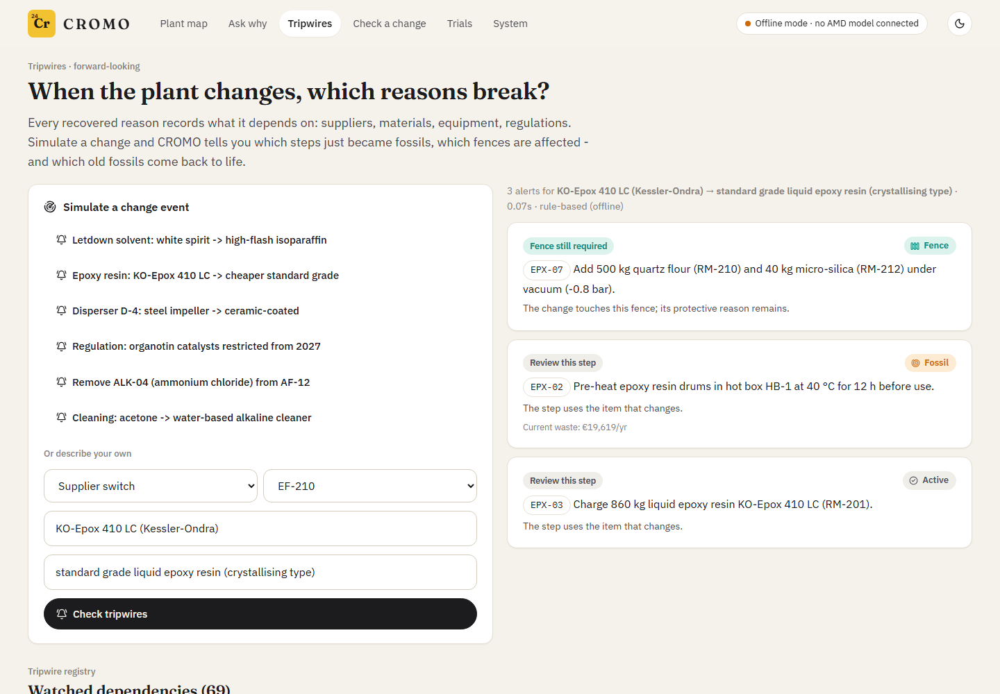

A young chemist traces it to one bad pigment delivery and fixes it by adding ammonium chloride. Twenty years later the bad pigment is long gone - and the factory still adds ammonium chloride to every batch. Nobody can say why.
The opposite also happens. Chesterton (1929): don't tear down a fence until you know why it was put up. Some steps that look pointless are load-bearing.
Cromo is Italian for chromium.
Fossils cost money every batch: material, labour, energy, tank time. Nobody dares remove them.
Fences look like waste but prevent fires, recalls and claims. Remove one and the old accident comes back.
And AI optimisers now propose "remove this, shorten that" - without knowing which is which.
Users: process engineers · quality / EHS managers · plant managers. A human approves every change.

in 12 fossil steps of a synthetic mid-sized coatings plant
protected from removal
sent to a person - never guessed


Every claim cites a quote verified verbatim in the source; uncited claims are dropped.
A fossil needs proof that its reason ended and no open safety evidence - otherwise it goes to a person.
Before you change - also a REST API for optimisers: blocked · caution · allowed with trial.
Each recovered reason records its dependencies: suppliers, materials, equipment, regulations.
Switch to a cheaper, crystallising epoxy resin and CROMO warns: the "useless" hot-box step is needed again.
Replace a solvent, and the fences that guarded against it may become fossils - re-investigate, trial, approve.

| Role | Open model | On AMD |
|---|---|---|
| Vision: scans, faxes, handwritten Italian logbooks | Gemma 4 26B-A4B-it (Google DeepMind) | vLLM · ROCm · image input |
| Reasoner: reads passages, follows leads, proposes verdicts | same model | vLLM · ROCm · tool calling |
| Embeddings: multilingual retrieval | bge-m3 | vLLM · ROCm |
Gemma 4, Google DeepMind's open model, is both the eyes and the brain: one model reads every scanned, faxed and handwritten page and does all the reasoning, with native image input and tool calling.
Ingestion → hybrid index → multi-hop investigation (9 hops max, streamed) → verified citations → evidence-strength rules → tripwires, change-check, trials.
Handwriting & scans read by the VLM: character error rate pending · pending model calls per step
| Heuristic baseline (no LLM) | CROMO on AMD | |
|---|---|---|
| FENCE recall | 56% | pending |
| False-FOSSIL rate | 11% | pending |
| Accuracy (4 classes) | 65% | pending |
| Citation precision | 61% | pending |
| Prompt-injection document | ignored | pending |
Synthetic archive: red herrings, contradictions, a reverted change, a reason only in a handwritten logbook. The product never reads the answer key (tested).

Workflow: fossil → trial plan → AI Tool brief for the engineer → approval record → decision → status back in CROMO.
AI Tool compare: what changed when a step was added. Knowledge library: the 178-document archive.
All driven through the Evolus REST API; created via POST /workflows.
Value: in our synthetic plant, €374,183/yr of fossil steps found, with an audit trail - and every fence protected from well-meant "optimisations".
Model: per-site subscription for process industries (coatings, chemicals, food, pharma); the change-check API for MES and optimisation vendors.
Next: pilot on a real archive · veteran-interview mode for unknowns (voice on AMD) · MES connectors · cross-recipe fossil detection.
Team: solo developer, built with Claude Code. MIT licensed, open models, zero budget.